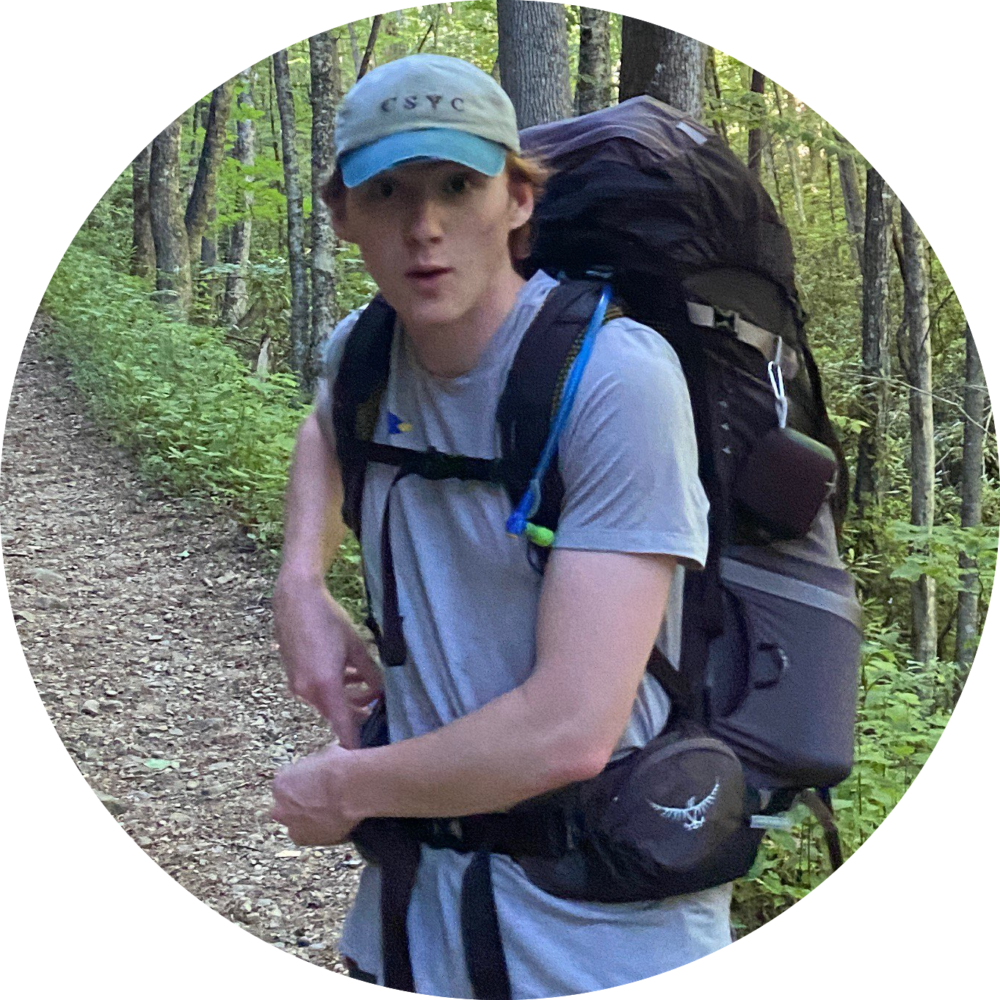

██╗ ██╗ ██╗ ██████╗ ██╗ ██╗ █████╗ ██╗ ███████╗ ██║ ██║ ██║██╔════╝ ██║ ██║██╔══██╗██║ ╚══███╔╝ ██║ ██║ ██║██║ ██║ █╗ ██║███████║██║ ███╔╝ ██║ ██║ ██║██║ ██║███╗██║██╔══██║██║ ███╔╝ ███████╗╚██████╔╝╚██████╗ ╚███╔███╔╝██║ ██║███████╗███████╗ ╚══════╝ ╚═════╝ ╚═════╝ ╚══╝╚══╝ ╚═╝ ╚═╝╚══════╝╚══════╝Technical Artist & Graphics Programmer
█████╗ ██████╗ ██████╗ ██╗ ██╗████████╗ ██╔══██╗██╔══██╗██╔═══██╗██║ ██║╚══██╔══╝ ███████║██████╔╝██║ ██║██║ ██║ ██║ ██╔══██║██╔══██╗██║ ██║██║ ██║ ██║ ██║ ██║██████╔╝╚██████╔╝╚██████╔╝ ██║ ╚═╝ ╚═╝╚═════╝ ╚═════╝ ╚════╝ ╚═╝

Hi, I'm Luc Walz, a game programmer and technical artist. I'm a recent graduate of Michigan State University with a Bachelor's of Engineering in Computer Science and have found a love for creating unique visuals in games.
C++/C#
Lua
GLSL/HLSL
HTML/CSS
Game Development
Building unique and engaging games using a variety of platforms, including Unity, Godot, and the Playdate SDK.
Technical Art
Rendering compelling visuals and experiences taking full control of the rendering pipeline.
██████╗ ██████╗ ██████╗ ██╗███████╗ ██████╗████████╗███████╗ ██╔══██╗██╔══██╗██╔═══██╗ ██║██╔════╝██╔════╝╚══██╔══╝██╔════╝ ██████╔╝██████╔╝██║ ██║ ██║█████╗ ██║ ██║ ███████╗ ██╔═══╝ ██╔══██╗██║ ██║██ ██║██╔══╝ ██║ ██║ ╚════██║ ██║ ██║ ██║╚██████╔╝╚█████╔╝███████╗╚██████╗ ██║ ███████║ ╚═╝ ╚═╝ ╚═╝ ╚═════╝ ╚════╝ ╚══════╝ ╚═════╝ ╚═╝ ╚══════╝
██████╗ ██████╗ ███╗ ██╗████████╗ █████╗ ██████╗████████╗ ██╔════╝██╔═══██╗████╗ ██║╚══██╔══╝██╔══██╗██╔════╝╚══██╔══╝ ██║ ██║ ██║██╔██╗ ██║ ██║ ███████║██║ ██║ ██║ ██║ ██║██║╚██╗██║ ██║ ██╔══██║██║ ██║ ╚██████╗╚██████╔╝██║ ╚████║ ██║ ██║ ██║╚██████╗ ██║ ╚═════╝ ╚═════╝ ╚═╝ ╚═══╝ ╚═╝ ╚═╝ ╚═╝ ╚═════╝ ╚═╝
Reach out to me!